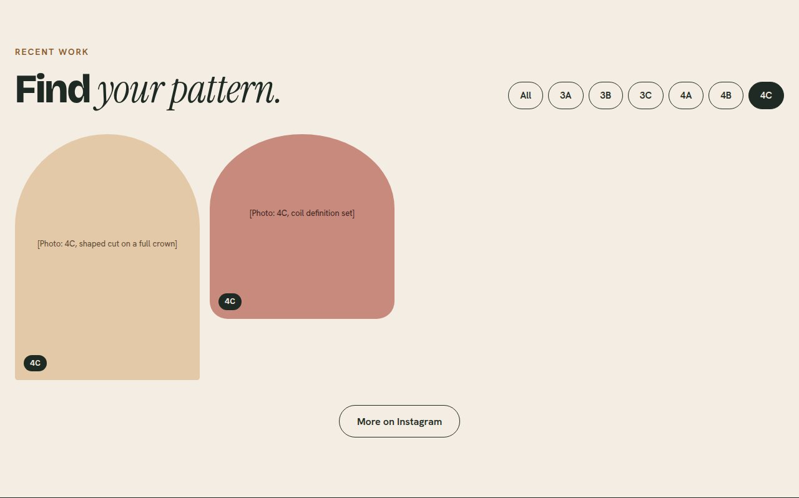

Problem
People with 3A to 4C hair can't tell from a stylist's Instagram whether she works with their pattern, what it costs, or how to prepare. So they send a DM, wait, or book somewhere else. For the stylist, that means the same questions over and over and her best work buried deep in the grid.
Process
This is a self-initiated concept, so I treated my starting beliefs as assumptions and wrote down how I'd test each one. I audited three real Charlotte curl salon homepages, built two proto-personas and a journey map, then mapped the path from an Instagram bio link to a booked visit. I sketched three hero layouts, wireframed the page for phone first, then designed and built it.
Key decisions
- Name the patterns. None of the three competitors names 3A to 4C on the homepage. A curl type strip right under the hero answers "is this for me" in a way a tagline can't.
- Filter the gallery by curl type. The user flow's make-or-break moment is seeing work on your own pattern, so the filter sits high on the page, before services.
- Price and time on every service. Two of three competitors hide prices from the homepage. Showing both removes the most common reason to DM.
- One page, in the order people ask. Is this for me, is she good, what does it cost, how do I book. Every Book a visit button goes to the stylist's existing booking tool.
- Split hero over a full-bleed photo. Text over a photo is hard to read on a phone and depends on one perfect image a real stylist may not have.

Outcome
A working, responsive site in vanilla HTML, CSS and JavaScript with a filterable gallery, a keyboard-friendly FAQ, 44px touch targets and AA contrast throughout. The research, wireframes and a five-task usability test plan are documented in the repo. The studio is fictional; bracketed text marks what a real client would supply.
What I'd revisit
Everything user-facing is still an assumption. Next I'd run the usability test with five people with 3A to 4C hair, interview a working stylist about her DM load, and replace the placeholder photos with real work.